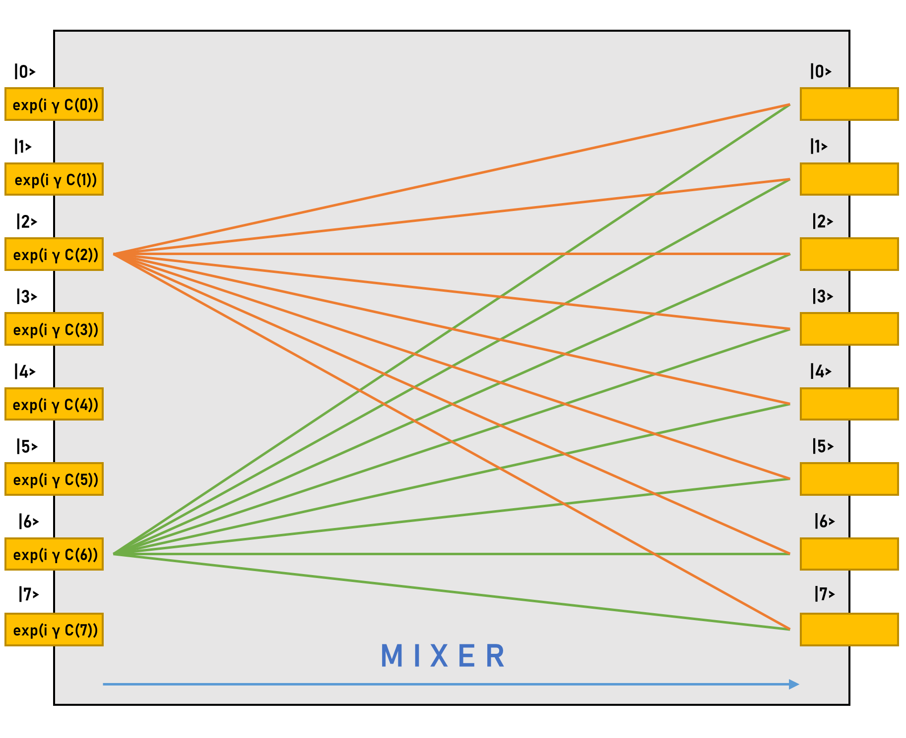
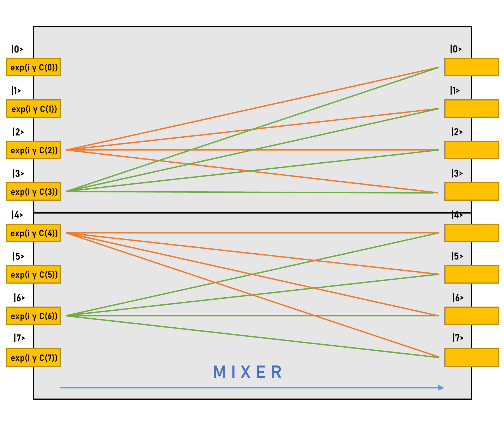

Channelled Constrained Mixers#
This tutorial will teach you how to build and utilize channelled constrained mixers for QAOA. These mixers are a novel concept, introduced with Qrisp 0.3. A scientific publication will follow in the near future.
Constraints in QAOA#
Real-world applications of combinatorial optimization often come with a variety of constraints. One of the most prominent use-cases of QAOA is portfolio optimization. In this problem, a set of binary decision variables \(x = (x_0, .. x_N)\) is given, indicating whether a certain stock should be in the portfolio. The goal is to find the vector \(x\) which minimizes the following quantity:
Where
\(x \in \mathbb{F}_2^N\) are the decision variables.
\(\mu \in \mathbb{R}^N\) specifies the expected returns of each stock.
\(\Sigma \in \mathbb{R}^{N \times N}\) is the covariance matrix of the stocks.
\( q > 0\) is the risk aversion parameter.
Additionally (and this is the important point), the problem also comes with a constaint: The investor only has finite funds, which has to be respected by the solution. This constraint is expressed as
How do we usually incorporate these constrains in QAOA? Since QAOA is an approximate optimization algorithm, in theory it suffices to modify the cost function such that the forbidden states are high-cost solutions:
Where \(g(x) = 1\) if \(x\) is forbidden by the constraints and \(0\) otherwise. This approach however comes with several disadvantages:
Compared to a classical algorithm, the quantum algorithm has a much larger search space because it also has to search through the forbidden states.
It is not clear how to choose \(\lambda\). This parameter needs to be big enough, such that forbidden states are effectively suppressed but small enough such that the hardware precision can still “resolve” the contrast in the actual cost function.
Forbidden states have a non-zero probability of appearing as a solution, reducing the overall effciency of the algorithm.
Constrained Mixers#
An interesting approach to overcome these problems is the introduction of constrained mixers. These mixers don’t mix the states between the allowed and forbidden subspace. In other words: If you insert an allowed state, your are guaranteed to also receive an allowed state after the mixer has been applied. Since QAOA is an alternating sequence of cost function applications (which don’t mix the computational basis at all) and mixers, the final state will also be an allowed state (provided that the initial state was allowed).
One of the first example was the XY mixer, that you might already be familiar with from the Max-\(\kappa\)-Colorable Subgraph QAOA Implementation. This mixer could be seen as some kind of “continuous swap” operation. That is: In any given multi qubit state, it preserves the number of ones. This is especcially usefull in the context of one-hot encoded QuantumVariables because this encoding relies on the fact that each state only contains a single one.
A more flexible framework has been presented in this paper. The approach here is to classically construct a matrix \(H\), which preserves the required subspace and subsequently use Trotterization to simulate evolution under \(H\) on the quantum computer. While this approach in principle allows arbitrary constraints, it also has a few disadvantages:
Trotterization is computationally extremely expensive compared to established mixers.
Due to finite Trotterization precision, there can be leakage into the forbidden subspace.
All constraints need to be evaluated classically for all possible states to build up \(H\).
With the introduction of channelled constrained mixers, we will overcome all of these drawbacks, so stay tuned!
Mono-Channel Mixers#
Our mixer architecture can be best understood by starting with a single channel. You will see what we mean by channel once you reach the multi-channel section. Mono-channel mixers are very flexible and provide an all-to-all mixing but can be more resource demanding than multi-channel mixers. We will give a short theoretical introduction, which is followed by an implementation of one such mixer, which will be plugged into the MaxCut QAOA Implementation.
Let
represent an arbitrary constraint function. We say \(x \in \mathbb{F}_2^n\) is allowed if \(f(x) = 1\) and \(x\) is forbidden otherwise.
We define:
Assume that there is a quantum circuit \(U_f\) preparing \(\ket{\psi_f}\) (a general procedure for compiling these efficiently will be presented shortly):
We now conjugate a multi-controlled Phase-Gate controlled on the \(\ket{0}\) state with \(U_f\). This yields the following unitary:
This quantum circuit satisfies the following properties, which classify it as a valid constained QAOA mixer
\(U_{\text{mono}}(\beta) \ket{x} = \ket{x}\) if \(f(x) = 0\) (follows directly from \(\bra{\psi_f}\ket{f} = 0\)). This property makes sure that forbidden states are mapped onto themselves, guaranteeing that the mixer only mixes among the allowed states.
\(U_{\text{mono}}(0) = 1\). This property ensures that there is indeed no mixing happening at \(\beta = 0\).
\(|\bra{x} U_{\text{mono}}(\beta) \ket{x}| \neq 1\) for \(f(x) = 1, \beta \in (0, 2\pi)\). This property shows that there is indeed some mixing happening for allowed states at \(\beta \neq 0\).
Implementation
In principle, any procedure preparing \(\ket{\psi_f}\) is suited. We invite the reader to find even more specialized/efficient preparation procedures for specific constraint functions. Here, we will demonstrate a general technique, that performs the preparation of \(\ket{\psi_f}\) by evaluating \(f\) in superposition. The general idea is to use the exact version of Grover’s algorithm to search for the allowed states.
To demonsrate, we define an oracle
[1]:
from qrisp import *
@auto_uncompute
def constraint_oracle(qarg, phase):
predicate = QuantumBool()
cx(qarg[0], predicate)
cx(qarg[-1], predicate)
p(phase, predicate)
Note that in the exact version of Grover’s algorithm, a parametrized phase gate is used to mark the good states (instead of a Z gate). Therefore, this oracle marks all the states, where the first qubit is in a different state as the last qubit. In other (more mathematical words), we specified
The next step is to write the state preparation function. For this we use the exact feature of Grover’s algorithm. This performs a Grover-search of the allowed states and thus prepares a state where only the allowed states are present.
[2]:
from qrisp.grover import grovers_alg
def prep_psi(qarg):
grovers_alg(
qarg, constraint_oracle, exact=True, winner_state_amount=2 ** (len(qarg) - 1)
)
We can test it:
[3]:
qv = QuantumVariable(3)
prep_psi(qv)
print(qv.qs.statevector())
(sqrt(2)/4 - sqrt(2)*I/4)*(|001> + |011> + |100> + |110>)
To conjugate it according to the above ideas, we need the inverse
[4]:
def inv_prep_psi(qarg):
with invert():
prep_psi(qarg)
We can now create the mixing function
[5]:
def constrained_mixer(qarg, beta):
with conjugate(inv_prep_psi)(qarg):
mcp(beta, qarg, ctrl_state=0)
From this we can verify the above properties:
[6]:
import numpy as np
# Checks the action of the mixer on a forbidden state (first and last qubit are both 1)
qv = QuantumVariable(3)
qv[:] = "111"
constrained_mixer(qv, np.pi)
print(qv)
{'111': 1.0}
[7]:
# Checks the action of the mixer with beta = 0 (expected to be the identity)
qv = QuantumVariable(3)
qv[:] = "110"
constrained_mixer(qv, 0)
print(qv)
{'110': 1.0}
[8]:
# Checks the action of the mixer on an allowed state
# (expected to mix only among the states where first and last qubit disagree)
qv = QuantumVariable(3)
qv[:] = "011"
constrained_mixer(qv, np.pi)
print(qv)
{'100': 0.25, '110': 0.25, '001': 0.25, '011': 0.25}
We can put it directly to test by using it as a MaxCut mixer
[9]:
from networkx import Graph
G = Graph()
G.add_edges_from([[0, 3], [0, 4], [1, 3], [1, 4], [2, 3], [2, 4]])
from qrisp.qaoa import (
QAOAProblem,
create_maxcut_cost_operator,
create_maxcut_cl_cost_function,
)
max_cut_instance = QAOAProblem(
cost_operator=create_maxcut_cost_operator(G),
mixer=constrained_mixer,
cl_cost_function=create_maxcut_cl_cost_function(G),
)
To verify that the algorithm indeed doesn’t leave the search-space we make sure to initialize with an allowed state:
[10]:
def prep_allowed_state(qarg):
h(qarg[1:-1])
x(qarg[-1])
max_cut_instance.set_init_function(prep_allowed_state)
res = max_cut_instance.run(qarg=QuantumVariable(5), depth=4, max_iter=25)
print(res)
{'00011': 0.3572, '11100': 0.0864, '01111': 0.0656, '01011': 0.0522, '10010': 0.0484, '00111': 0.0484, '10110': 0.047, '11110': 0.045, '11010': 0.0448, '10000': 0.043, '11000': 0.0392, '10100': 0.0376, '00101': 0.0232, '01001': 0.0216, '01101': 0.0212, '00001': 0.0192}
From the MaxCut QAOA tutorial, we know that the correct solution to this instance is either 11100 or 00011. We see that not only do the correct solutions have the top probability, there are also only solutions which satisfy our constraint (first and last qubit disagreeing).
Multi-Channel Mixers#
The following section might be a bit abstract on it’s own - we recommend skipping to the Physical Intuition section to get an intuitive understanding on what multi-channel mixers do.
As already mentioned, mono-channel mixers can be flexible regarding the constraints and provide an all-to-all mixing. This however also implies that they require an all-to-all entangling circuit, which can be costly. Multi-Channel mixers remedy this problem by only perfoming mixing within distinct subspaces, effectively reducing the need for entanglement.
To begin with, we again assume we are given a constraint function \(f\). Instead of a singular state \(\ket{\psi_f}\) we now define \(m\) orthogonal states \(\ket{\psi_f^i}\), such that
How to pick such a splitting? That is up to you and your implementation! Find whatever fits best for your problem. We now assume that there is a quantum circuit \(V_f\) that can be expressed as a direct sum of \(m\) operators \(V_f^i\).
These operators have a similar purpose as the preparation circuit in the mono-channel mixer. That is: They prepare \(\ket{\psi_f^i}\) from a given computational basis-state \(\ket{x_i}\):
We get the multi-channel mixer circuit from conjugating a circuit that applies a phase \(\beta_i\) to each of the \(\ket{x_i}\) with the preparation circuit \(V_f\):
In this final form, we can now see what is meant with “channeled”: Each of the subspaces spanned by the computational basis vectors of \(\ket{\psi_f^i}\) are getting mixed via one of \(m\) channels (possibly with varying “mixing strength” \(\beta_i\)).
Implementation
To demonstrate how a multi-channel mixer works, we introduce a new QuantumFloat called channel, indicating which channel is used for the mixing. The previously mentioned states \(\ket{x_i}\) are therefore states of the form
Where the second ket is the channel QuantumFloat. The first ket is a QuantumVariable we will call mixing_var. Our mixer will therefore mix states within mixing_var for a given index \(i\) but not across \(i\) indices. What kind of mixing is performed on mixing_var? In principle, it can be an arbitrary mono-channel mixer. We will thus recycle our previously implemented mixer.
Note that this construction indeed satisfies the requirement that \(V_f\) can be expressed as a direct sum. This is because the multi-channel state preparation is just the mono-channel state preparation acting on the tensor product space. Thus:
To begin with the implementation, we first use the as_hamiltonian decorator to implement the hamiltonian evolution:
In other words: How intense each channel mixes mixing_var.
[11]:
@as_hamiltonian
def hamiltonian_evolution(channel_number, beta=0):
if channel_number % 2:
return 0
else:
return beta / 4 * channel_number
Here, the channels with an odd number perform no mixing at all, while the even channels perform mixing with growing intensity. You can put an arbitrary function here - our choice is simply for demonstrational purposes!
To make sure that indeed only states which are of the previosly specified form
are propagated, we create another wrapping function:
[12]:
def apply_channel_propagation(channel, mixing_var, beta):
with control(mixing_var, ctrl_state=0):
hamiltonian_evolution(channel, beta=beta)
We are now ready to code the mixer function
[13]:
def multi_channel_mixer(channel, mixing_var, beta):
with conjugate(inv_prep_psi)(mixing_var):
apply_channel_propagation(channel, mixing_var, beta)
Implementation testing
Awesome! Time to play a bit around to test it’s behavior. We will begin with a simple test wether this function is still the identity at \(\beta = 0\).
[14]:
channel = QuantumFloat(3)
mixing_var = QuantumVariable(3)
channel[:] = 2
mixing_var[:] = "101"
multi_channel_mixer(channel, mixing_var, 0)
print(multi_measurement([channel, mixing_var]))
# Yields: {(2, '101'): 1.0}
{(2, '101'): 1.0}
Check if there is some mixing going on at \(\beta \neq 0\):
[15]:
channel = QuantumFloat(3)
mixing_var = QuantumVariable(3)
channel[:] = 4
mixing_var[:] = "100"
multi_channel_mixer(channel, mixing_var, np.pi)
print(multi_measurement([channel, mixing_var]))
{(4, '100'): 0.25, (4, '110'): 0.25, (4, '001'): 0.25, (4, '011'): 0.25}
Note that we initialized mixing_var with an allowed state (first and last qubit disagree) and also only received allowed states as output. We experiment using a different channel:
[16]:
channel = QuantumFloat(3)
mixing_var = QuantumVariable(3)
channel[:] = 2
mixing_var[:] = "100"
multi_channel_mixer(channel, mixing_var, np.pi)
print(multi_measurement([channel, mixing_var]))
{(2, '100'): 0.625, (2, '110'): 0.125, (2, '001'): 0.125, (2, '011'): 0.125}
As expected, there is “less intense” mixing going on, ie. the initial state still has a high probability. Our final test will investigate the behavior of the forbidden states.
[17]:
channel = QuantumFloat(3)
mixing_var = QuantumVariable(3)
channel[:] = 2
mixing_var[:] = "111"
multi_channel_mixer(channel, mixing_var, np.pi)
print(multi_measurement([channel, mixing_var]))
{(2, '111'): 1.0}
For the forbidden state, indeed no mixing happened (as expected).
Note that furthermore in none of these experiments, we saw mixing among channels (also as expected).
Physical intuition behind multi-channel mixers#
As the mathematical description might be a bit absract, this section is intended to provide some intuition to what multi-channel mixers do. For this we want to emphasize the conceptual relationship between the multi-slit experiment and alternating operator algorithms like QAOA. Why are these ideas related? The phase separator \(\text{exp}(i\gamma C)\) can be interpreted as a wall of slits, applying a phase of \(\text{exp}(i \gamma C(x))\) to the slit \(x\):

The slits sent out light beams that are brought to interference with the beams of other slits on a screen on the other side of the setup. The process of bringing multiple beams to interfer with each other can be interpreted as the mixer. The analogy goes even deeper: If we move the screen very close to the slits, the horizontal beams will have a signficantly shorter path compared to the other beams and thus experience less radial intensity decay. A close screen therefore corresponds to a mixer with very small \(\beta\), which performs almost no mixing.
In the picture above, we see all-to-all mixing. As mentioned, when implemented on a quantum computer, this requires an all-to-all entangling circuit, which can be computationally expensive. A channelled mixer remedies this flaw by only performing mixing within certain subspaces (here \(\text{span}(\{\ket{0}, \ket{1}, \ket{2}, \ket{3} \})\) and \(\text{span}(\{\ket{4}, \ket{5}, \ket{6}, \ket{7}\})\) - we therefore have two mixing channels).
